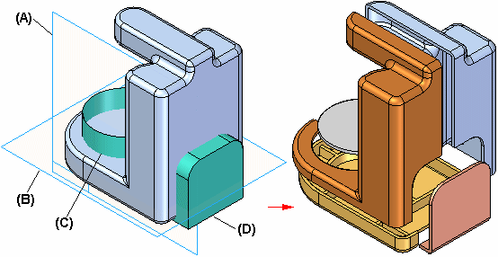
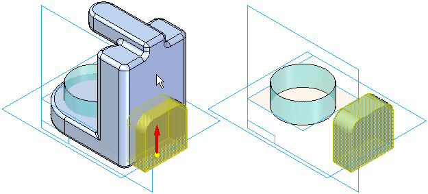
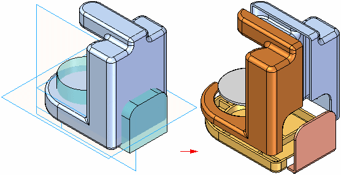
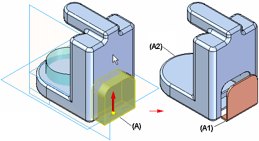
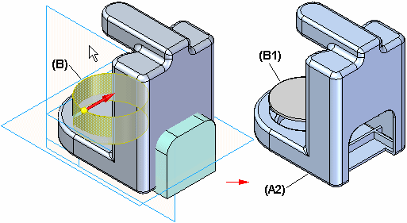
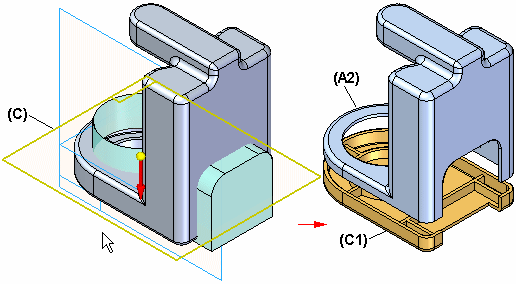
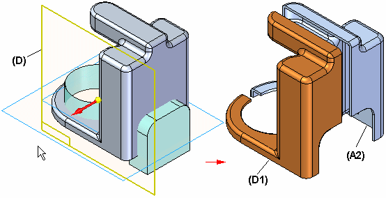

Divide Part command
Divide Part is an ordered modeling command; it does not exist in the synchronous modeling environment.
Use the Divide Part command to divide one part into multiple parts and saves the new parts as separate documents. You can use reference planes (A) or construction surfaces (B, C, D) to define how you want to split the part. The new part documents are associative to the original part document. Each new part is a base feature in its new document, and the new documents are associative to the original part.

Typically used on molded parts, this command is useful when you model one part and later want to divide it into separate parts.
Defining the first division
The first step in dividing a part is to select the reference plane or construction surface that defines where you want to divide it. A dynamic arrow (A) allows you to define the cutting direction. After you define the cutting direction, the display changes to show the result (B) of the cutting operation.

If you intend to divide the part more than once, choose the cutting direction carefully. The part the arrow points to cannot be divided again. Make sure the arrow is pointing away from the part you want to divide again.
After you define the first cut, you can click the Finish button, or the Next Cut button. If you click the Finish button, the Divide Part dialog box is displayed so you can define the new document names. To make it easier to define the proper document names, the display of the model changes as you move your cursor over each row in the dialog box.
After you type the names for the new part documents in the Divide Part dialog box, click the Select All button and then the Save Selected Files button to create the new part documents.
Adding divisions
After defining the first cut, you can use the Next Cut button on the command bar to add a new division. To divide the part again later, use the Add button on the Divide Part dialog box.
Inserting divisions
To insert a new division between existing ones, click a division on the Divide Part dialog box and then click the Insert button. The new division is added above the selected one. If any parts need to be updated after the new division is inserted, this is reflected in the status column. To update a part, select it and then click the Create/Update Selected Items button.
Copying and updating divided part documents
You should use Design Manager to copy and rename the documents that form a divided part. After you copy and rename the document set, you must manually update links between the new parent and child documents.
For example, when you use Design Manager to copy an assembly that contains divided parts, you can also specify that you want to copy and rename the parent and child documents for the divided parts. However, when you open the new parent document, the child documents listed in the Divide Part dialog box will be the original documents, not the new copies. The Status column will contain question marks to show that the child documents cannot be found.
To update links to the new child documents, use the Find command. Select a row in the dialog box, right-click to display the shortcut menu, and then select the Find command. You can then use the Select Part Copy dialog box to locate the updated child document. Repeat this process for each child document listed in the Divide Part dialog box.
Workflow overview
The parts shown next were created by following the steps listed below.

-
Construction surface A is used to create parts A1 and A2 (part A1 cannot be cut again).

-
Construction surface B is used to create part B1 and modify A2 (part B1 cannot be cut again).

-
Construction surface C is used to create part C1 and modify part A2 (part C1 cannot be cut again).

-
Reference plane D is used to create part D1 and modify part A2 (part D1 cannot be cut again).
